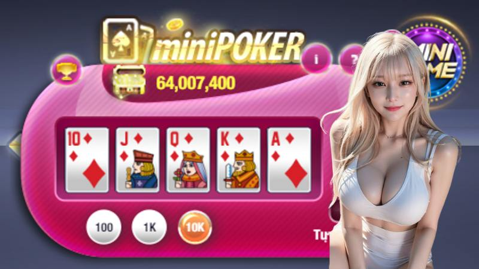
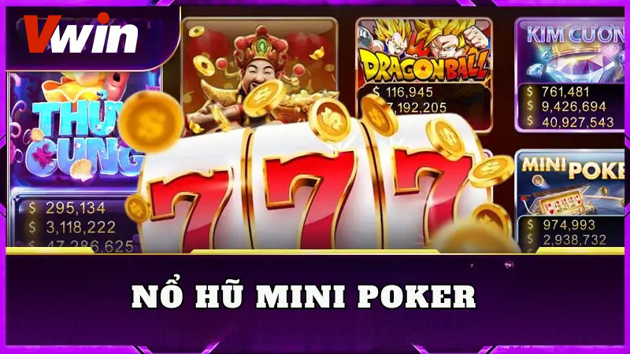
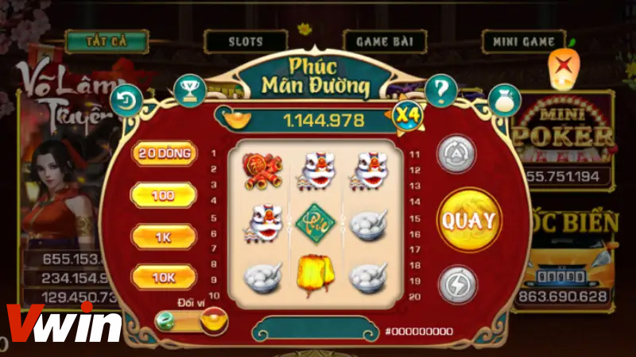
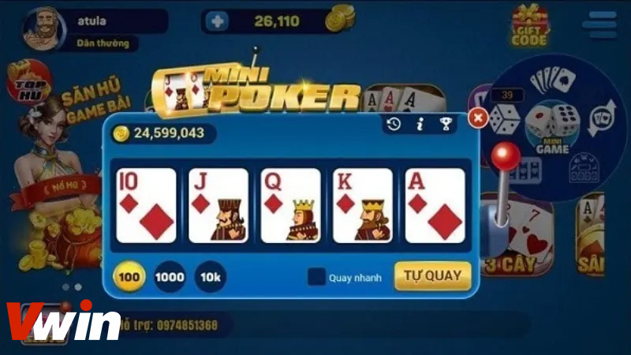

CASINO ONLINE
ĐÃ ĐĂNG TRÊN THÁNG BA 5, 2024 BỞI Vwin

Trong hành trình khám phá vô vàn thú vị của game quay hũ đổi thưởng, có một trò chơi đã trở thành biểu tượng không thể bỏ qua đó chính là Mini Poker. Dù có hàng tá các trò chơi quay hũ khác, nhưng Nổ Hũ Mini Poker vẫn luôn là ngôi sao sáng, đốt cháy lòng đam mê của những người chơi. Nếu bạn là một trong những người chưa khám phá được bí mật đằng sau những chiến thắng lớn tại Nổ Hũ Mini Poker, hãy sẵn sàng cho một cuộc phiêu lưu đầy bất ngờ và hứa hẹn.
Khám phá sự độc đáo của game Nổ Hũ Mini Poker
Nổ Hũ Mini Poker là một trò chơi độc đáo kết hợp sự kỳ diệu giữa chiến thuật của Poker và may mắn của Casono Vwin. Giao diện của trò chơi bao gồm 5 lá bài và 1 trục quay, trong đó các lá bài được lựa chọn ngẫu nhiên từ bộ bài Tây gồm 52 lá.

Khám phá sự độc đáo của game Nổ Hũ Mini Poker
Người chơi chỉ cần nhấn vào trục quay và hệ thống sẽ trả về kết quả với 5 lá bài tương ứng. Nếu những lá bài này hợp thành một tổ hợp trúng thưởng, bạn sẽ nhận được phần thưởng xứng đáng.
Mặc dù Mini Poker chỉ là một phần nhỏ trong các loại game Jackpot, nhưng nó có nhiều ưu điểm nổi bật. Với luật chơi đơn giản, đồ họa đẹp và tính giải trí cao, Mini Poker đã thu hút sự quan tâm của rất nhiều người chơi và trở thành một điểm sáng trong thế giới game đổi thưởng.
Nguyên tắc và luật chơi cơ bản

Nguyên tắc và luật chơi cơ bản
Luật chơi Mini Poker cho người mới bắt đầu rất đơn giản và dễ hiểu. Đầu tiên, bạn cần đăng nhập vào trò chơi bằng tài khoản cá nhân của mình và chọn trò Mini Poker từ danh sách các trò chơi có sẵn.
Khi đã vào giao diện chính của trò chơi, bạn sẽ thấy các nút nhấn quan trọng sau đây:
- Nút siêu tốc: Được thiết kế để loại bỏ hiệu ứng và cho phép kết quả nổ hũ hiển thị nhanh chóng hơn, giúp bạn tiết kiệm thời gian và tăng trải nghiệm chơi game.
- Nút tự quay: Bạn có thể kích hoạt chế độ tự động (auto) bằng cách ấn vào nút này. Chế độ này giúp bạn không cần phải tự mình nhấn khởi động thủ công mỗi lần chơi, tiết kiệm công sức và thuận tiện hơn.
- Lịch sử cược: Chức năng này cho phép bạn xem lại lịch sử quay của mình, từ đó đánh giá kết quả và chiến thuật chơi của mình.
- Bảng xếp hạng: Hiển thị danh sách những người chơi có thành tích tốt nhất trong trò chơi. Điều này giúp bạn tham khảo và so sánh thành tích của mình với người chơi khác, từ đó thúc đẩy sự cạnh tranh và nâng cao trình độ chơi của bản thân.
Với các tính năng và luật chơi dễ hiểu như vậy, Nổ Hũ Mini Poker là lựa chọn lý tưởng cho những người mới bắt đầu trong thế giới game quay hũ đổi thưởng. Hãy tham gia ngay và trải nghiệm sự hấp dẫn của trò chơi này!
Luật trả thưởng hấp dẫn
Khám phá vận may trong vũ trụ của Nổ Hũ Mini Poker, nơi mỗi vòng quay đều mang đến cơ hội vô tận! Hãy cùng tôi khám phá hành trình này và tận hưởng những khoản thưởng lớn mà bạn có thể đạt được!
Luật trả thưởng trong cổng game được tính theo các tổ hợp bài sau đây:
- Đôi J trở lên: 1 đối 2.7. Điều này có nghĩa là nếu bạn có một đôi J hoặc cao hơn, bạn sẽ nhận được 2.7 lần số tiền mà bạn đã cược.
- Thú: 1 đối 5. Nếu bạn có một tổ hợp bài Thú, bạn sẽ nhận được 5 lần số tiền cược ban đầu.
- Xám Cô: 1 đối 8. Đây là một tổ hợp cao hơn, nếu bạn có Xám Cô, bạn sẽ nhận được 8 lần số tiền cược.
- Sảnh: 1 đối 13. Tổ hợp Sảnh cũng có giá trị khá cao, bạn sẽ nhận được 13 lần số tiền cược nếu có Sảnh.
- Thùng: 1 đối 20 mức cược. Nếu bạn có tổ hợp bài Thùng, bạn sẽ nhận được 20 lần số tiền cược.
- Cù Lũ: 1 đối 50 mức cược. Tổ hợp Cù Lũ là một trong những tổ hợp cao nhất, bạn sẽ nhận được 50 lần số tiền cược nếu có Cù Lũ.
- Tứ Quý: 1 đối 150 mức cược. Tứ Quý là tổ hợp cao nhất trong trò chơi này, bạn sẽ nhận được 150 lần số tiền cược nếu có Tứ Quý.
- Thùng Phá Sảnh: 1 đối 1000 mức cược. Tổ hợp này có giá trị cực kỳ cao, bạn sẽ nhận được 1000 lần số tiền cược nếu có Thùng Phá Sảnh.
- Thùng Phá Sảnh J: Nếu bạn có tổ hợp Thùng Phá Sảnh với một lá bài J, bạn sẽ nhận được phần thưởng Nổ Hũ. Đây là tổ hợp cao nhất và mang lại phần thưởng lớn nhất trong trò chơi.
Những điều cần nhớ khi tham gia trò chơi Nổ Hũ Mini Poker

Những điều cần nhớ khi tham gia trò chơi Nổ Hũ Mini Poker
Trong hành trình khám phá thế giới của trò chơi Nổ Hũ Mini Poker, có một số điều quan trọng mà bạn cần ghi nhớ:
- Đặt mục tiêu mức cược: Trước khi bắt đầu chơi, hãy xác định mục tiêu mức cược mà bạn muốn đạt được và tuân theo nó. Tập trung vào mục tiêu cuối cùng là săn hũ và không để những sự phân tâm khác làm bạn lạc hướng.
- Kiểm tra kết nối mạng: Đảm bảo rằng kết nối mạng của bạn ổn định và không bị gián đoạn, vì một hũ có thể nổ bất kỳ lúc nào. Việc mất kết nối có thể khiến bạn bỏ lỡ cơ hội quý báu để thay đổi cuộc sống.
- Tận hưởng trải nghiệm: Bạn vẫn có thể tham gia các trò chơi khác trong khi chơi Nổ Hũ Mini Poker, như tài xỉu, xóc đĩa, hoặc bầu cua. Điều này giúp bạn tận hưởng thời gian cá cược lâu hơn và mang lại trải nghiệm đa dạng.
- Kiên nhẫn và kiên trì: Mini poker là một trò chơi may mắn, vì vậy bạn cần phải kiên nhẫn và kiên trì để có thể giành được chiến thắng lớn. Đừng nản lòng nếu không thành công ngay lập tức, bởi thành công đến với những người kiên nhẫn.
Bài viết trên đã hướng dẫn chi tiết về luật chơi game Nổ Hũ Mini Poker, giúp các bạn hiểu rõ hơn và bắt đầu cuộc phiêu lưu thú vị này. Hãy bắt đầu chinh phục những hũ vàng và nhận những phần thưởng hấp dẫn mà trò chơi mang lại!
.png)